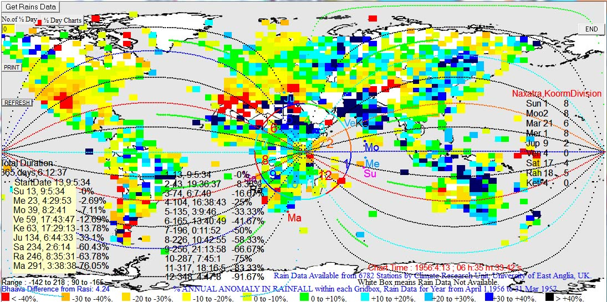
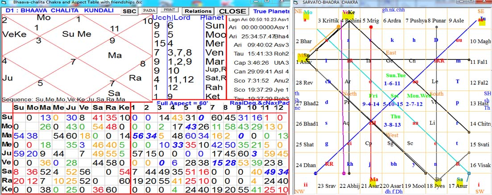
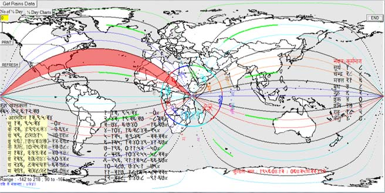
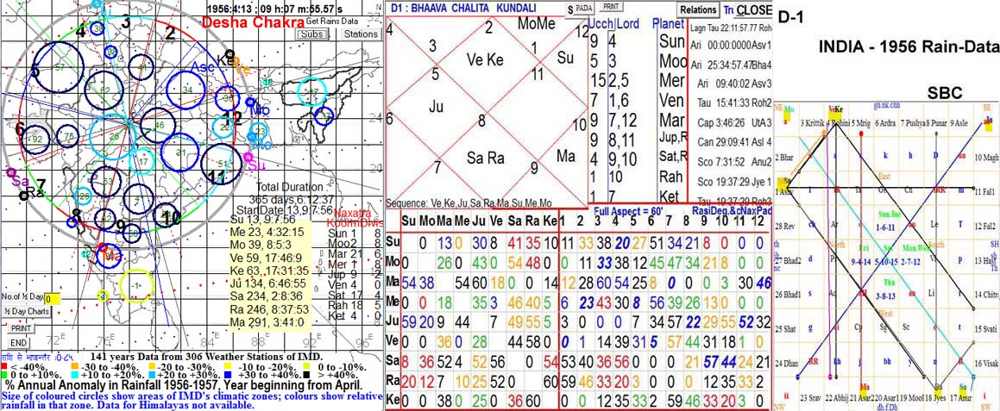

CAUTIONS :
(1)World-Chart or Prithvi-Chakr, which is illustrated below, gives astrological results for large areas and cannot explain data for smaller tracts for which Desha-Chakra, Pradesha-Chakra, Mandala-Chakra, Nagar / Graama -Chakra and Kshetra-Chakra should be used.
(2)Only the most findamental elements of Phalita Jyotisha are discussed, leaving aside the finer nuances because the aim here is to focus on the basis issues, such as SSS-vs-Drik (Shri Surya Siddhaanta versus Physical Astronomy in the field of astrology), rasi vs bhaavachalita, etc.
The following article studies 1956 World rainfall Data astrologically, presenting only the most essential items in a summarized form. We are all learners, and if something is found to be illogical, comments may be posted at : http://groups.yahoo.com/group/VedicAstrologyForum/
Prithvi-Chakra with D-1 on World Map
D-1 bhaavachalita chart at the time of 1956 Meshaarambha (Sun's entry into Nirayana Mesha / Aries) on World's map is as follows, together with rainfall data from 6782 weather stations of the world collected by Climate Research Unit of University of East Anglia in UK (integrated into Kundalee Software, for which there is a button on the map 'Get Rains Data') ,
D-1 Bhaavachalita with Aspects and SBC
Detailed Chart Analysis : India-China-Japan , USA, etc
FACTS :
In Meru-centric World Map, Mesha rasi is always to the east of Mt Meru in Kenya, with middle of Mesha going along the equator. Most of India, China and Japan always fall in Vrish sign, signs shown in black dotted curves in the map. This year, India and China fall in 2H and 3H of bhaavachalita (2H means 2nd house or Dhana Bhaava, 2L means lord of 2nd house, etc ; these codes are already popular on internet). India witnessed record rains, +25% than long-term average. Regional break-up is as follows :
+47.9% NW India
+28.4% CNE (Central North East India)
+26.7% WC (West Central India)
+16.7% NE (North-East India)
+16.1% Peninsular India
It is easy to see that on Meru-centric rasi / bhaava lines (or Merucentric Meridians may be called Merudians), northern regions witnessed very high rains while souithern regions got relatively less rains but much more than average. Extreme South India and Ceylon received less than average rains.
Another noteworthy point is the startling fact that India got far more relative rains than China or Japan, although these countries fall in same rasi.
Explanation
India-China-Japan :
Venus and Ketu reside in 3H. Ketu is 12L and neecha, while Venus is 3L + 7L + 8L and svagrihi (in its own sign). General, neecha and uchcha planets cancel each other's debility and exaltation (bhanga). But when nodes are conjunct with a full planet, the power of nodes gets reduced considerably. Nodes manifest their full potential only when full planets are not influencing them. Here, Venus is very powerful, hence Ketu is incapable of destroying the svagrihi strength of Venus.
3L, 7L, 8L etc are malefics and killers, and if they influence a region then thge general effect is drought and deaths. But if the planet is exalted, in moolatrikona or svagrihi, then the result will be destructive and killer rains and floods. Venus in 3H increases its foul potential. Therefore, a malefic svagrihi Venus must send excessive rains.
Now, the question is : why regions of India in 3H got much more rains than in 2H, both being in Vrish rasi owned by Venus ? The answer is simple : although Venus was in Vrish, it owned 3H only, while 2H was owned by Mars which was exalted and yoga-giver (1L + 9L + 2L) but enmical to Venus. Hence, in those regions of 2H which fell in Vrish, Mars was house-lord while Venus was rasi-lord and both were enmical to each other. Therefore, rains in those portions of Vrish which fe3ll in 3H lordewd by Venus was much higher than in those portions of Vrish which fell in 2H owned by Mars. It happened both in India as well as in China.
Next question is : why India witnessed higher rains than in China and Japan, although they were in same houses and rasi ?
In SBC, India had no vedha by any planet, while Japan was viddha by Mars and China ("ch")by Sun. Sun and Mars were both exalted. Normally, exalted planets give excess rains. But Mars had mutual rasi exchange relation with highly malefic Saturn which neutralized the rain making powers of Mars, and Mars was enmical to Venus and therefore not well disposed to countries residing in rasi of Venus. Sun was 6L, sitting in rasi of Mars with 90% aspect of Mars and through Mars Sun was also influenced by Saturn. While NW India was fully in control of Venus : in rasi of Venus, in bhaava of Venus, and not viddha by any planet. A debilitated Ketu was the only planet to affect India, but node is of little importance in the face of a svagrihi Venus with node. But Sun and its relatives Mars and Saturn affected China. Of these three planets, Sun was in sign of Mars, hence Mars was the most influential which was enm ical to Venus. Therefore, China got less rains than India.
Mars was exalted and yoga-giver, but could not cause excessive rains even in its own signs as Venus did, because Mars had a mutual exchange relation with malefic and drought-maker Saturn which was highly malefic by dint of being 11L + 12 L, retrograde and in 8H. Due to benefic effects of Mars, regions affected by Saturn were not as much adversely affected as they would have been in the absence of absence of influence of Mars, while the houses of Mars did not get excess rains due to influence of Saturn. Due to high aspect of Saturn, northern portion of Mesha got less rains than southern portions of Mesha.
Leo was divided into H and 6H, 5H owned by Moon and 6H by Sun. Normally, 6L causes drought but if 6L is exalted in lagna than destructively heavy rains ensue. But here we find drought in Leo. Why ? Sun causes dushta-vrishti, i.e., excess destructive rains, while Mars causes benefic rains by dint of being yoga-giver : 1L + 9L (and 2L). Mars prevents destructive rains, while Sun prevents benefic rains. Excess rains can be either deastructrive or benefic. If both conditions (benefic and malefic excess rains) are negated, then then above-normal rains does not remain a possibility. It is a very interesting case. But the real culprit lies elsewhere : the most severe drought occurs in those portions of 6H which are owned by Sun as house lord but fall in the rasi owned by Mercury which is an enemy of Sun then. Therefore, the malefic 6L exalted Sun is enemy of southern portions of 6H and causes drought, while it causes little less than normal rains in Leo part of 6H due to the aforementioned interplay of Sun and Mars. Influence of malefic Saturn through its relation with Mars further reduced the rains.
Mars is 1L + 9L + 2L, but 9H gets mush less rains than 1L and 2L, because of neecha Rahu in 9H. Neecha Ketu was not much effective in 3H due to svagrihi Venus there, but a loner Rahu in 9H reduced rains phenomally.
Interplay of many planets creates a complex situation, which is further complicated by the interplay between bhaava and rasi as shown above. These complex interplays take place in natal horoscopy too, which shortcut seeker astrlogers do not take into account.
There may be astrologers declaring the above explanation to be not very clear and simple, and therefore unaccepatable. But they can never provide any alternative which could work for ALL available data. We must respect the sanctity of data, and try to explain them on the basis of some consistent methodology without modifying the rules to suit data.
How To Study Bhaavottama in Medini
To add to the consternation of simplicity-seekers, here is one more complexity : in the above case D-1 and D-9 have all bhaavas overlapping of same regions for about 75% areas. For instance, northern 25% of 6H of D-1 fall in 5H of D-9, but the remaining 6H of D-1 fall in 6H of D-9, creating bhaavottama for southern 75% part of D-1's 6H. We find severe drought in this part of bhaavottama 6H, while D-1's remaining northern 25% of 6H faced much less drought. Bhavottama of Trika houses (6H, 8H, 12H) enhances the malefic results, while bhaavottama of benefic houses inceases the benefits. Here is the picture of Bhaavottama in 6H between D-1 and D-9 , red-shaded area shows the 6H bhottama of D1 and D9, which witnessed worst drought in the world that year :
Desha Chakra of India-1956 and Rain Data
In the Inia's Map below, size of coloured circles represents the area of metereological divisions and their colours show the percentage anomay of annual relative rainfall from 1 Apr, colour codes same as in World Map above.
The most startling fact in this chart on map is below average rainfall in Kerala and Tamil Nadu, in contrast to very high rains in all other metereological regions of India. Why ?
Kerala was in Saturn's house and sign, Saturn being yoga giver by dint of being 9L + 10L, and strong due to its retrogression, although samagrihi only (in neutral sign) in the sign of Mars. Therefore, Saturn should cause benefic rains, esp in western part of southern India where Saturn's aspect was almost total (80% to 100%).
But there exalted Mars was seated, neutral to Saturn. An exalted neutral planet should add to the benefic results of Saturn, but the opposite happened because Mars was a malefic : 7L + 12L, and opposed the benefic effects of Saturn. Had Mars and Saturn been equally strong and effective for a particular region while being opposite to each other in functionality, they would have cancelled each other and normal rains would have occurred. Since Mars was stronger, less than normal rains occurred in western parts of 9H around Kerala. In Tamil region, however, Saturn's benefic effect was somewhat greater than the malefic effect of Mars : Saturn's aspect was 83% to 100%, 55' in the middle of Tamil Nadu but 59' in middle of Kerala) while Mars was away from the eastern part of 9H and was in western part of 9H. This small difference between Kerala and Tamil Naduresulted in 1% difference in rains : Kerala got -2% while Tamil Nadu got -1% as shown in the map at the centre of their zonal circles.
It must be noted that Mars was not effective in spite of its exaltation in those regions of 9H which were in Merucentric Vrish (of Prithvi Chakra), its power was manifest only in Merucentric Mesha which included only the southernmost part of India. Desha Chakra cannot be used without its larger frame : Prithvi Chakra.
Same methodology should be used to explain the data for other regions of India in the map above. Difference from long term average (=anomaly) in % is indicated at the centre of each metereological region in number, e.g. +92% and +76% in two metereological regions (Subs) of Gujarat mostly falling in 6H lorded by Venus of India Chakra, while the other house of Venus was lagna where Venus sat as svagrihi but there rainfall was only +34% than normal. Why ? Because of aspects of other very powerful planets : exalted Sun and exalted Jupiter having many times more aspect on 6H than on 1H and both neutral to Venus, hence adding to the magnitude of rains in 6H, the third exalted planet Mars having negligible difference in its aspects on 1H and 6H.
Some regions do not fit comfortably into any bhaavachalita house and therefore it is not worthwhile to use this method there. But out of 140 years of Indian and 98 years of international data programmed into Kundalee software, there are plenty of cases which allow us to study the interplay of various planets in giving shape to final astrological result for particular houses , which is the main problem of predictive astrology. Present article presents only a summary, one should use Kundalee software to see role of SBC, aspects, navaamsha (D-9), SC (Sudarshana Chakra) etc to get better and more detailed analysis than presented here. More and more of homework will make one a better astrologer. This method is part of Raaj-Jyotisha : the astrology of Raajya (political states or nations) which went into decline with the decline of Hindu states about one millenium ago. After mastering this method comfortably, one can understand the nuances of individual horoscopy better, which is a more difficult field. Shortcuts would not make anyone an astrologer. It needs long years of hard work and study to make a doctor or an engineer, why one should expect that some roadside books, a computer and some shortcut techniquess would suffice for an astrologer ?
Conclusion
Thus, we find considerable changes in astrological results due to such factors which are normally neglected by astrologers. These factors operate likewise in natal astrology too. Natal astrology also needs such minute details in order to determine parts of body getting affliction and other attributes, for instance. SSS (Shri Surya Siddhaanta) with BPHS (Brihat Parashara Hora Shaastra) and supportive texts provide a consistent methodology which may be extended to explore finer nuances and details of phenomena.
Dividing India into Metereological subdivisions is a colonial garbage created by materialists, because these Metereological subdivisions do not fit into the natural divisions of weather related phenomena which follow the Vidishaa-centered Desha Chakra in India and Meru-centered Prithvi Chakra for the whole World.
VJ